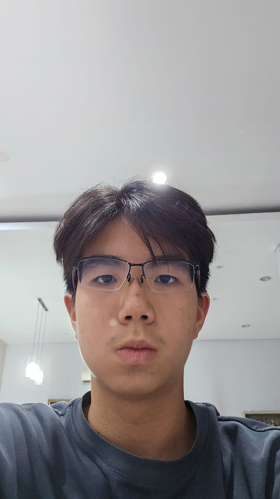
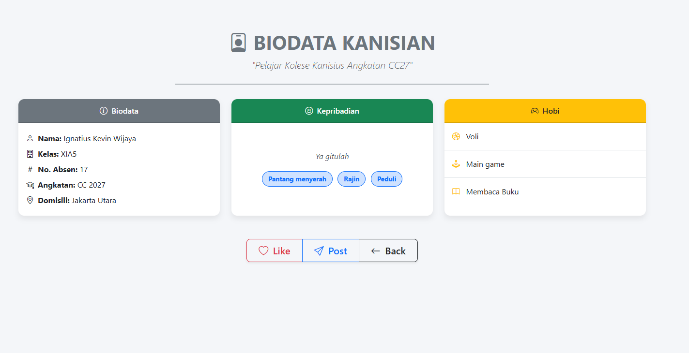
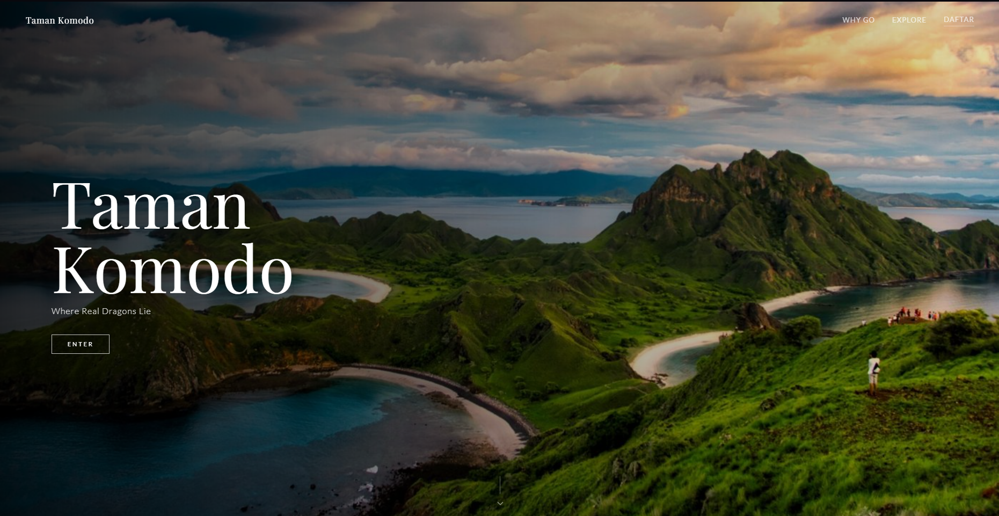

Ignatius Kevin Wijaya
Tentang Saya
Saya adalah siswa kelas XI dari Kolese Kanisius yang memiliki minat tinggi dalam bidang teknologi dan pemrograman web. Selama semester ini, saya telah mengeksplorasi secara mendalam dasar-dasar HTML, CSS, dan JavaScript untuk merancang dan mendeploy berbagai project website interaktif. Di luar jam akademik, saya aktif menyalurkan energi positif lewat olahraga voli dan bermain sebagai Middle Blocker (MB). Pelajaran favorit saya adalah matematika, karena melatih logika berpikir sistematis yang sangat berguna dalam penulisan baris kode pemrograman.
Nilai Ulangan Semester
| No | Materi Evaluasi / Tugas | Nilai |
|---|---|---|
| 01 | Laporan Mini Project | 100 |
| 02 | Nilai Ulangan Harian Bootstrap | 85 |
| 03 | Tugas Website Biodata | 100 |
| 04 | Analisis Javascript Mini Project | 90 |
| 05 | Mini Project Website (Final Semester) | - |
Project Semester Ini

Website Biodata
Website Biodata Siswa yang responsif menggunakan HTML semantik dan CSS Flexbox.
Lihat Project
Kuliner Nusantara
Website kuliner Indonesia yang menampilkan hidangan populer, resep tradisional, dan rekomendasi restoran dari berbagai penjuru nusantara. Dibangun dengan HTML, CSS, dan JavaScript, website ini hadir dengan tampilan yang menarik secara visual dan navigasi untuk memudahkan eksplorasi kekayaan kuliner Indonesia.
Lihat Project
Taman Komodo
Website wisata Taman Komodo dengan informasi berkaitan dengan tempat wisata serta formulir yang dapat diisi untuk memesan tiket kesana. Website ini dibuat dengan CSS, Javascript, dan HTML sehingga menampilkan visual yang menarik sekaligus memungkinkan interaksi pengunjung dengan website.
Lihat Project